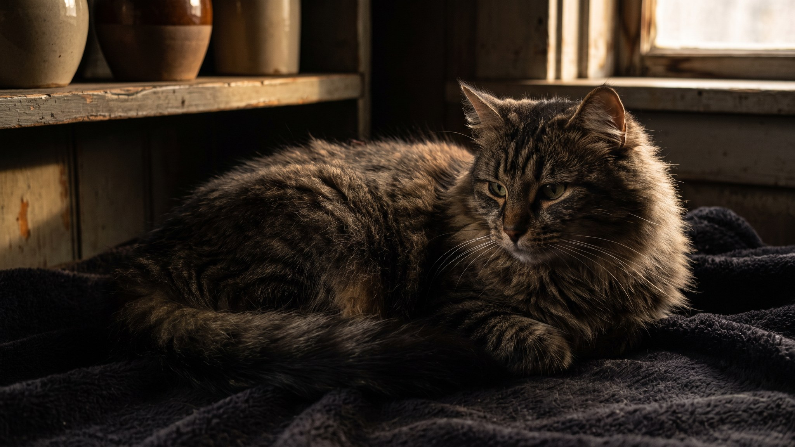

Запах из лотка слышно через всю квартиру, а кошка начала присматриваться к углу за диваном. Это не характер и не вредность: кошки очень чувствительны к состоянию лотка и голосуют за чистоту ногами. Инструкция ниже: как убирать, как мыть, сколько лотков нужно и куда их ставить, чтобы всё работало.
🐾 Чтобы уход не держать в голове
AnimaLife напомнит, когда стричь когти, вычёсывать, купать и обрабатывать от паразитов, и заведёт дневник по вашему питомцу. Бесплатно.
Настроить напоминания → Настроить в MAX →
У вас iPhone? AnimaLife есть в App Store
Комки и кучки убирайте минимум раз в день, лучше два: утром и вечером. Кошка нос не обманет: если лоток грязный, она найдёт другое место. Комкующийся наполнитель при ежедневной уборке хватает на 1-2 недели, потом нужна полная замена. Впитывающий (силикагелевый или древесный) требует полной замены раз в неделю независимо от частоты уборки.
Тёплая вода и обычное мыло без резкого запаха. Хлоросодержащие чистящие средства не подходят: кошки чувствуют хлор гораздо острее нас, и запах отпугивает их от лотка. Запах ещё хуже проблемы. Ополаскивайте тщательно, дайте лотку высохнуть перед засыпкой нового наполнителя.
Пахучие ароматизаторы внутри лотка выглядят решением для нас, но для кошки это дополнительный барьер. Для кошки идеал простой: нейтральный, чистый, без запаха.
Работающее правило: лотков должно быть на один больше, чем кошек. На одну кошку берут два лотка, на двух кошек три. Это снижает конкуренцию и даёт каждой кошке выбор. Если один лоток грязный или занят, всегда есть второй.
Где ставить:
Если лоток чистый, а кошка ходит мимо или поведение изменилось, это повод обратиться к врачу, а не каприз. Сигналы:
Это не поведенческие вопросы, а сигналы, которые ветеринар должен оценить.
Материал носит информационный характер и не заменяет очную консультацию ветеринара.
🐾 Заведите дневник ухода за кошкой
Вес, шерсть, обработки, прививки — всё в одном месте. А если что-то смущает, AI-ветеринар ответит круглосуточно и бесплатно.
Завести дневник → Завести в MAX →
У вас iPhone? AnimaLife есть в App Store
🐾 Понравился разбор?
Подпишитесь на канал — каждый день разбираем по одному тревожному симптому у кошек и собак: что в пределах нормы, а когда пора к врачу. Подпишитесь, чтобы не пропустить разбор, который может спасти здоровье вашего питомца.